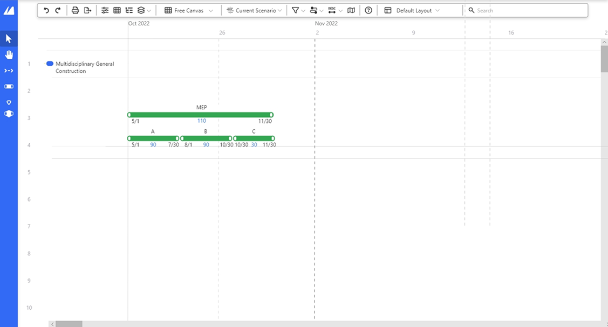

PMA Consultants Project Summit
Contributed to redesigning Project Summit’s Split feature. Addressed user’s need of taking an existing activity and making it smaller.
Overview
Project Summit is PMA Consultants’ internal construction scheduling platform used to manage project timelines and workflows. During my UI/UX Internship, I was asked to explore design solutions for a specific usability challenge that users had consistently identified through feedback. Working alongside the innovation team, I analyzed user pain points and proposed user-centered solutions aimed at improving usability and streamlining project workflows while balancing technical constraints.
Below is a screen from a typical scheduling project within Project Summit. There are 3 purple nodes on the left side of the image labeled “MEP”, “Interior Build-out”, and “Finishes” respectively. Each purple node is a Work Breakdown Structure, or WBS in short, and contains multiple different activities (orange, green, and red bars pictured to the right) within themselves representing different action items.
My role
I worked alongside the innovation team to address usability challenges identified through user interviews and feedback. The main goal was to simplify the process of splitting existing scheduling activities into smaller components, a task we observed users performing manually through workarounds. I analyzed research findings to understand these behaviors and pain points, then translated those insights into multiple interface concepts. Through sketching and iteration I explored solutions that would better support users’ existing workflows while accounting for the platform’s technical constraints.
The problem
Below is a screen from typical beginning stages a user would take when planning a new scheduling project within Project Summit. Each green line is an activity. Through user feedback, we found that instead of using Work Breakdown Structures (WBS), multiple users were starting with large activities (as seen in the activity titled “MEP” below), and manually breaking them down using smaller activities (activities beneath labeled “A”, “B”, and “C” respectively). Our challenge then became to design a solution that allowed users an ability to breakdown activities more easily.

What are the Users Trying to Do?
This use case shows us that some users find it helpful to build from larger to smaller when first starting out their schedule.
It takes users six clicks to break down a large activity into three smaller, equal activities. This repetitive process revealed an opportunity to better support how users naturally organize their schedules.
How might we make it easier for users to split existing activities into smaller components while reducing unnecessary steps?
Process
Ideate
I began exploring design solutions that addressed the insights gathered from user’s recorded use case. I sketched multiple concepts and evaluated different approaches to organizing information. I focused on reducing repetitive interactions while preserving the flexibility users needed to organize their activities. This meant considering not only how users would initiate a split, but also how they would control where and how an activity was divided.
Concept 1: Split
A user is able to right click an activity and choose the “Split...” option from context menu. Lines appear on the activity as buttons that a user can use to choose where to split the original activity in 2.
Feedback from this Design
This concept prompted several questions for future iterations, including how users would create more than two child activities and whether activities created through a split should themselves be splittable. These edge cases would need additional research and validation before moving forward.
Concept 2:
[Describe this concept.]
Feedback from this Design
[Add the feedback this concept received.]
Solution
Outcome
This design represents one of the several concepts explored during the project. While it was not the final solution implemented, it reflects my contribution to the ideation and iteration process.
What I learned
Working on a live product taught me that successful design is not always about creating the perfect solution. Instead, it’s about understanding user pain points and developing practical solutions that align with project goals.